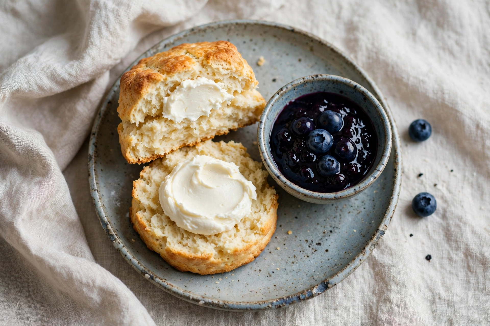
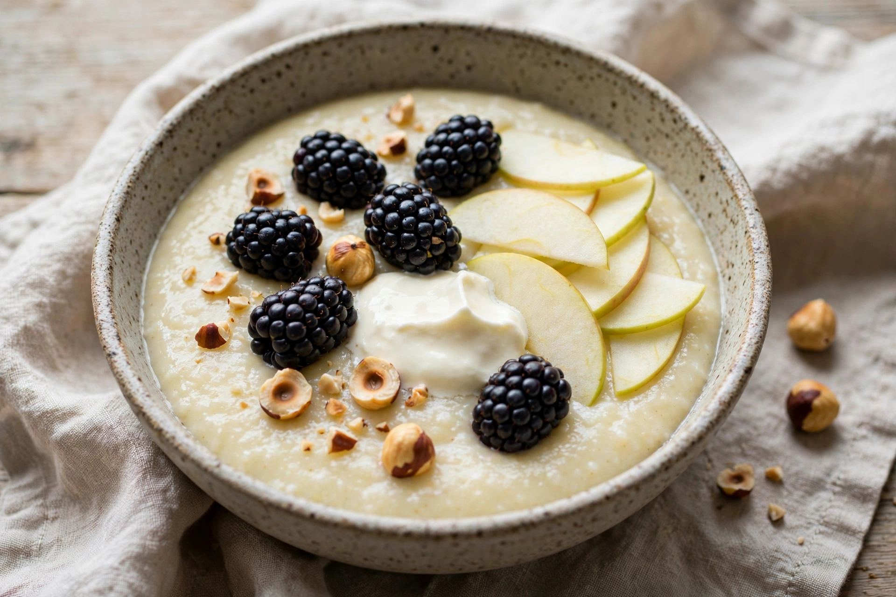
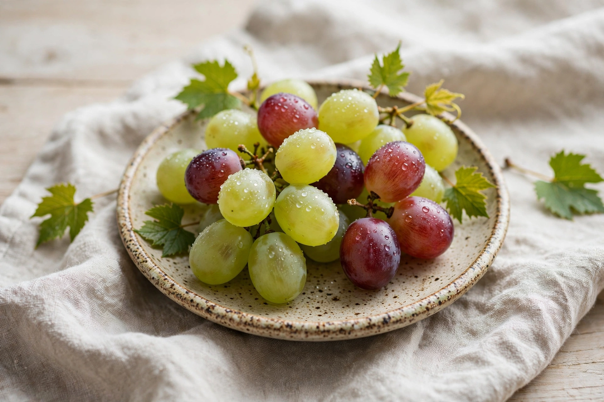

Välkommen!
Vi har öppet för frukost, lunch, middag och fika. I vårt bageri hittar du även nybakat bröd och fantastiska bakverk att ta med hem.
Mån-Tor: 07:30-21:00 | Fre-Lör: 07:30-22:00 | Sön: stängt
Frukost
Serveras fram till kl: 10.30
Ruths rågtallrik
Rågbröd, saltat smör, havgus, apelsinmarmelad & kokt ägg

Søtofte yoghurt
Plommonkompott, honung, ingefära & mandelgranola

Scone
Klassisk bageriscone, färskost & blåbärssylt

Mannagrynsgröt
Björnbär, äpple, crème fraîche & hasselnötter

Färsk getost
Krämig getost & tomater på rostat rågbröd

Turkiska stekta ägg
Youghurt och brynt smör
(Tillval: Mergues + 75)

En tallrik vindruvor
Dagsfärsk frukt

Lunch
Serveras från kl: 12:00
Barsnax & Charkuterier
Luques-oliver
Gröna, krispiga franska delikatessoliver från Languedoc

Saltrostade valenciamandlar
Klassiska spanska mandlar, rostade i havssalt

Ostron Legris
Färska ostron serverade med en syrlig
baskisk xipister-vinägrett
(Pris per styck)

Rosette de Lyon
Traditionell fransk lufttorkad salami av högsta kvalitet

Fiocco di Prosciutto
Ett av Italiens finaste charkuterier, ljuvligt mör, lufttorkad skinka

Förräter & mindre rätter
Kycklingterrine
Krämig terrine med rökt bacon, söta aprikoser & krispiga hasselnötter

Lardo & sardeller
Len, italiensk kryddad späck och salta sardeller på smörgrillat bröd

Tomater i tonnatosås
Svenska tomater med krämig tonfiskdressing, kapris, lyxig bottarga & mejram

Baby gem-sallad
Krispig sallad med gulbetor, svarta rädisor, söta framboisinedruvor, valnötter & riven toskansk pecorino

Varmrätter
Munkasvinssida
Långbakad fläskkarré med ugnsrostad violinopumpa, höstkål, castellucciolinser & färsk dragon

Torsk & krassesmör
Ångad ryggfilé av torsk med bräserad kålrabbi, vita coco de paimpol-bönor, vaxbönor & skummat krassesmör

Desserter & ost
Hallonsemifreddo
Fryst italiensk glasstårta med friska hallon och krispigt, karamelliserat pistagebrittle

Chokladkaka
Klassisk, fyllig fransk chokladkaka serverad med en klick lättvispad grädde

Comté
En bit vällagrad fransk hårdost gjord på opastöriserad komjölk

Middag
Serveras från kl: 17:00
Barsnax & Charkuterier
Luques-oliver
Gröna, krispiga franska delikatessoliver från Languedoc
Saltrostade valenciamandlar
Klassiska spanska mandlar, rostade i havssalt
Ostron Legris
Färska ostron serverade med en syrlig
baskisk xipister-vinägrett
(Pris per styck)
Saucisson sec
Traditionell, fransk lufttorkad kryddig fläskkorv av högsta kvalitet

Noir de Bigorre
Exklusiv, ljuvligt mör lufttorkad skinka från den svarta gasconska urrasen

Förräter & mindre rätter
Kycklingterrine
Krämig terrine med rökt bacon, söta aprikoser & krispiga hasselnötter
Lardo & sardeller
Len, italiensk kryddad späck och salta sardeller på smörgrillat bröd
Cervelle de canut
Krispiga rädisor och gurka med en traditionell, fransk örtsmakssatt färskostdipp från Lyon

Fikon- & päronsallad
Fräsch ruccolasallad med mogna fikon, päron, krispiga valnötter och riven pecorino-ost

Baby gem-sallad Caesar
Krispig hjärtsallad med krämig caesardressing, vitlökskrutonger och lyxig Vacche Rosse-parmesan

Tomater i tonnatosås
Svenska tomater med krämig tonfiskdressing, kapris, lyxig bottarga & mejram
Grillade havskräftor
Havskräftor grillade till perfektion, serverade med ett skummat, doftande krassesmör

Varmrätter
Munkasvinssida
Långbakad fläskkarré med ugnsrostad violinopumpa, höstkål, castellucciolinser & färsk dragon
Ugnsbakad hälleflundra
Exklusiv hälleflundra bakad med vita franska bönor, purjolök, en fyllig vermouthsås & trattkantareller

Grillad munkasvinskotlett
Saftig fläskkotlett med krispiga brytbönor, asiatisk salladskål, rostad mandel & katalansk salsa romesco

Deserter och ost
Chokladkaka
Klassisk, fyllig fransk chokladkaka serverad med en klick lättvispad grädde
Plommon- & mandeltarte
Ljuvligt frasig fransk paj med söta plommon och mandelmassa, serverad med krämig crème fraîche

Svartvinbärssorbet
Frisk och intensivt syrlig sorbet på svarta vinbär, avrundad med en klick vispgrädde

Siciliansk mango & fikonblad
En lyxig kombo av solmogen mangosorbet och krämig, aromatisk glass smaksatt med fikonblad

Hallonsemifreddo
Fryst italiensk glasstårta med friska hallon och krispigt, karamelliserat pistagebrittle
Comté
En bit vällagrad fransk hårdost gjord på opastöriserad komjölk